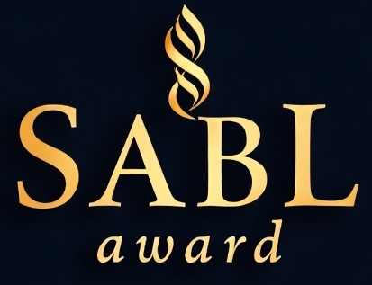
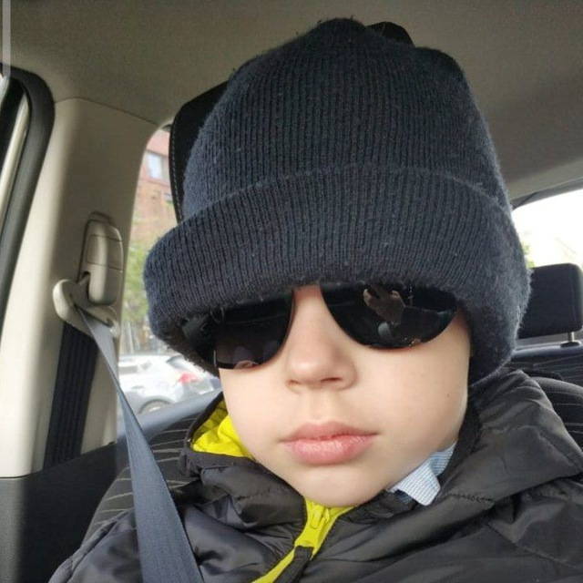
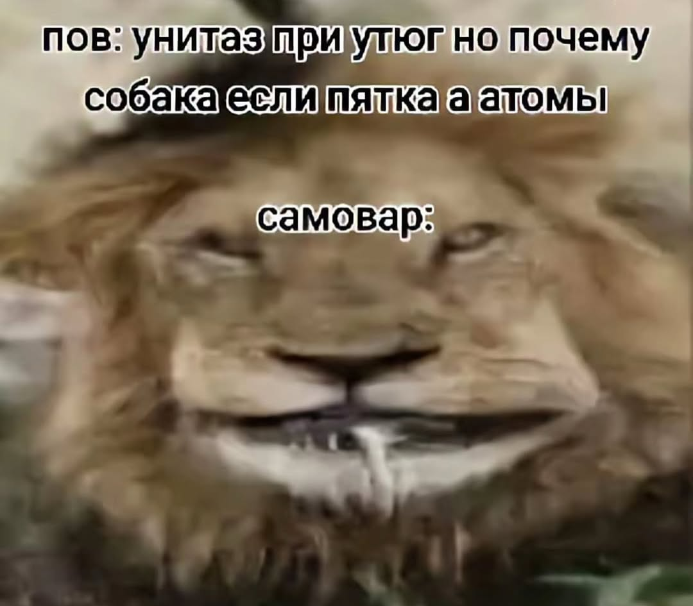

Новости премии SABL
Мобилизации 42
Все новости
Главный организатор премии задумывается о проведение SABL в 2026 году.
Основные моменты не известны, но кое-что организатор сказал:
- Всё тайное сообщество Deutschе Lieder будет привлечено к участию
- Также будут привлечены новые люди для организации премии
- Среди новых организаторов будут новые должности, распределение непонятно
Стало известно какие призы получать победители
Организатор премии, Мишаня, сообщил, что победители в некоторых номинациях получат приз - Биткойн (настоящий, правда честно).
Список номинаций:
- SABL KING
- SABL QUEEN
- Человек-мем года
- Bomboclat года
- Лучший завозер
PS(03.09.25) Информация является устаревшей и может быть изменена
Теперь известно, кто сможет голосать на премии.
Организатор сообщил, что все, у кого будет ссылка на голосование и которые будут соблюдать правила проведения, могут принять участие в голосовании.
- PS (03.09.25) Это является обновлением более старой новости и является официальным
Основные номинации премии и победители в них

SABL KING
Егор Насолдин Потрошитель2000

SABL QUEEN
Алексей

Человек-мем года
ЛенскийZe

Лучший завозер
Иван Седов
Ссылка на Голосование
Чтобы проголосовать следуйте данным шагам
- Пройдите по ссылке на сайт премии
- С помощью навигации найдите раздел "Номинации"
- В день премии будет онлайн встреча, на которой откроется доступ к голосованию